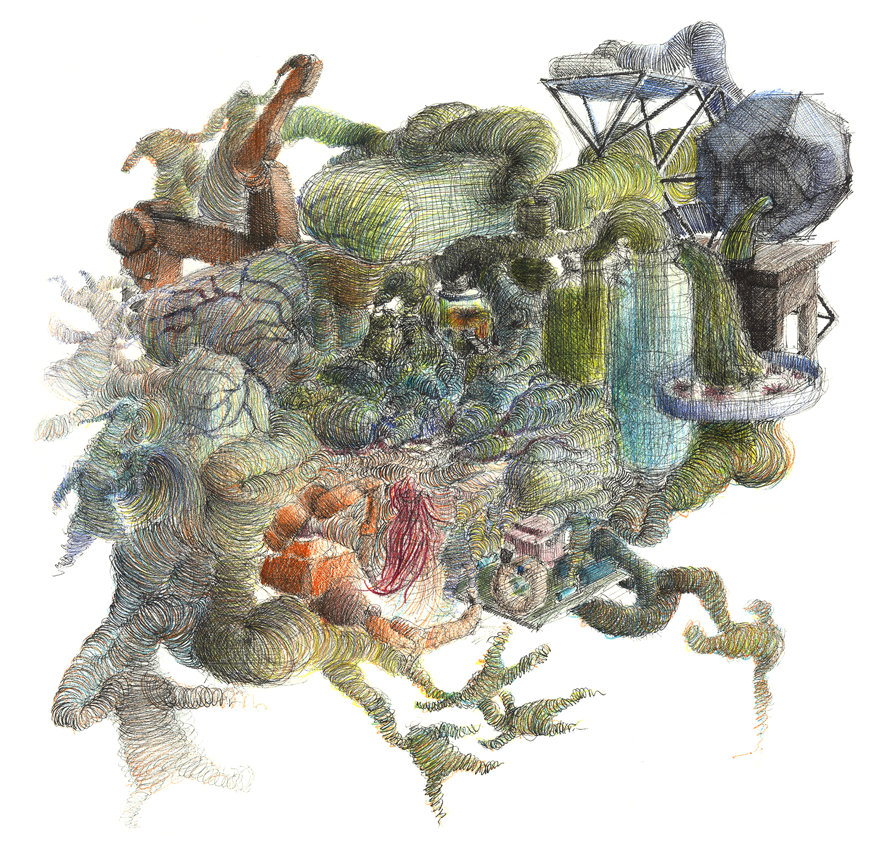
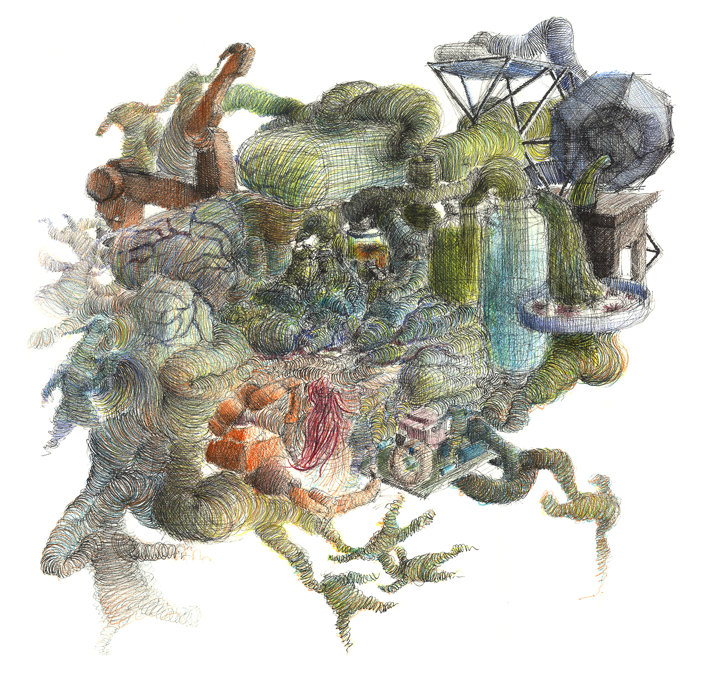
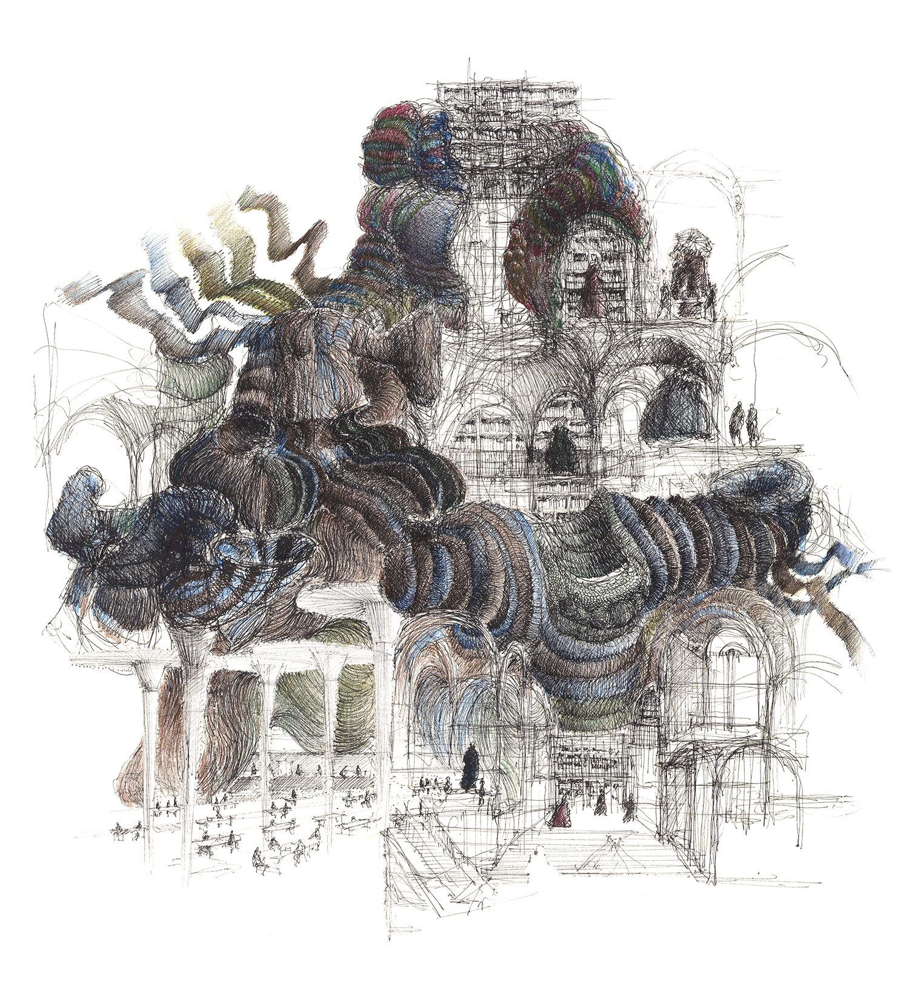
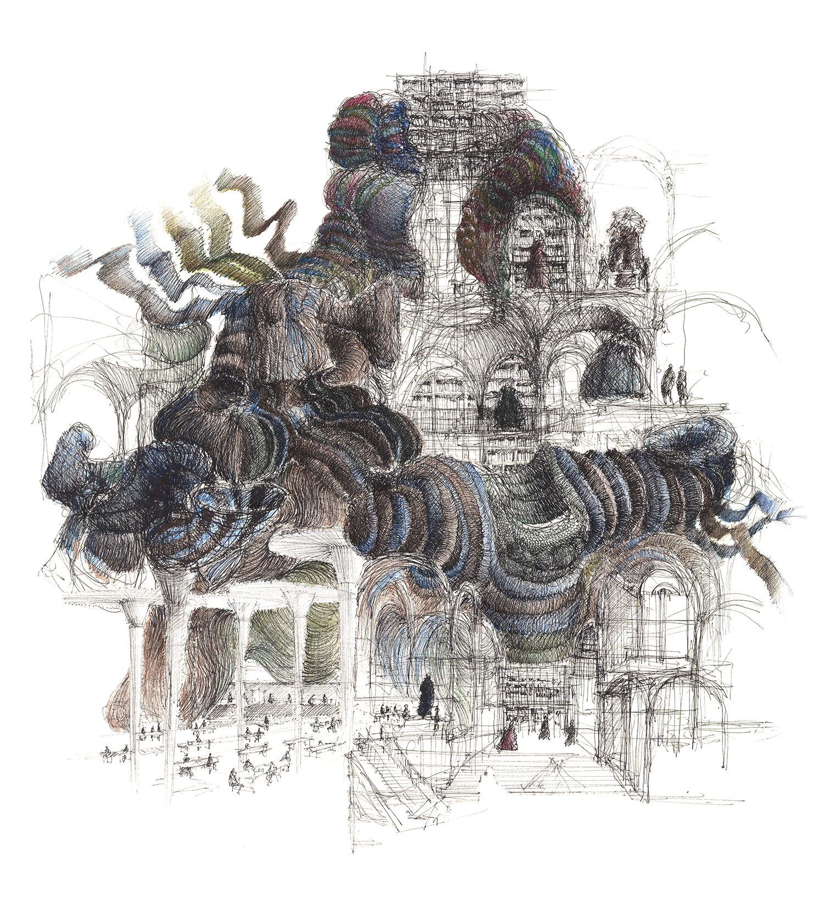
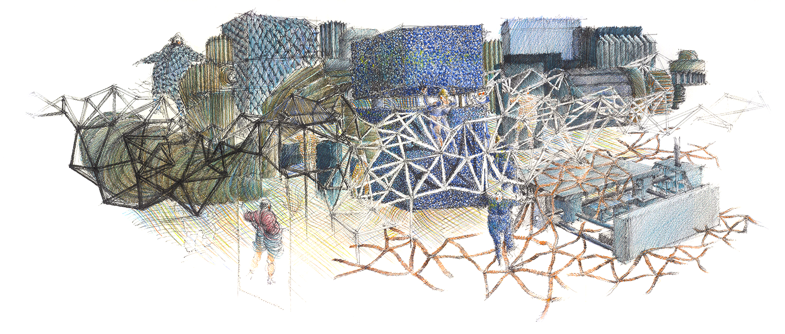
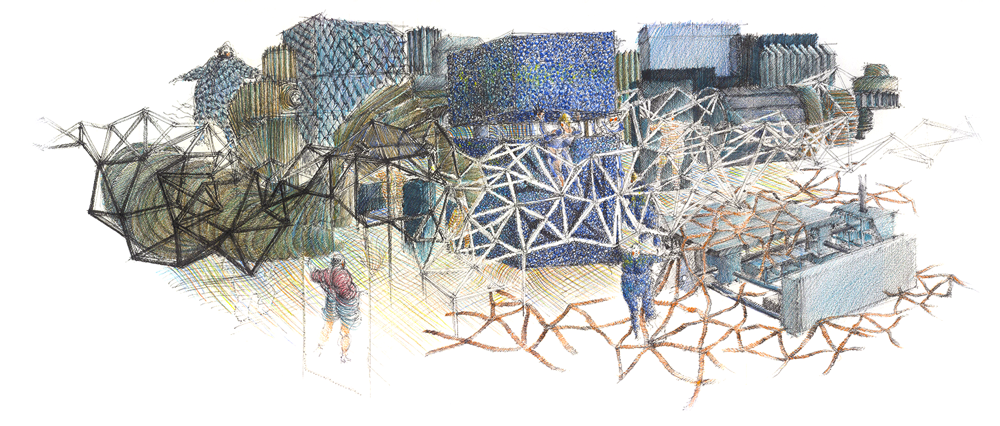
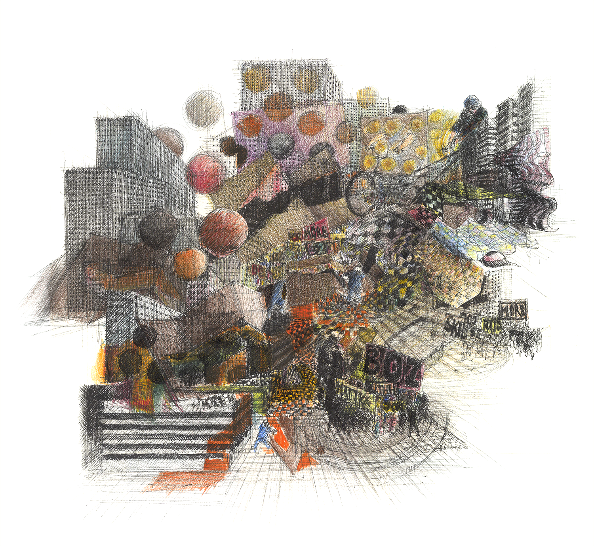
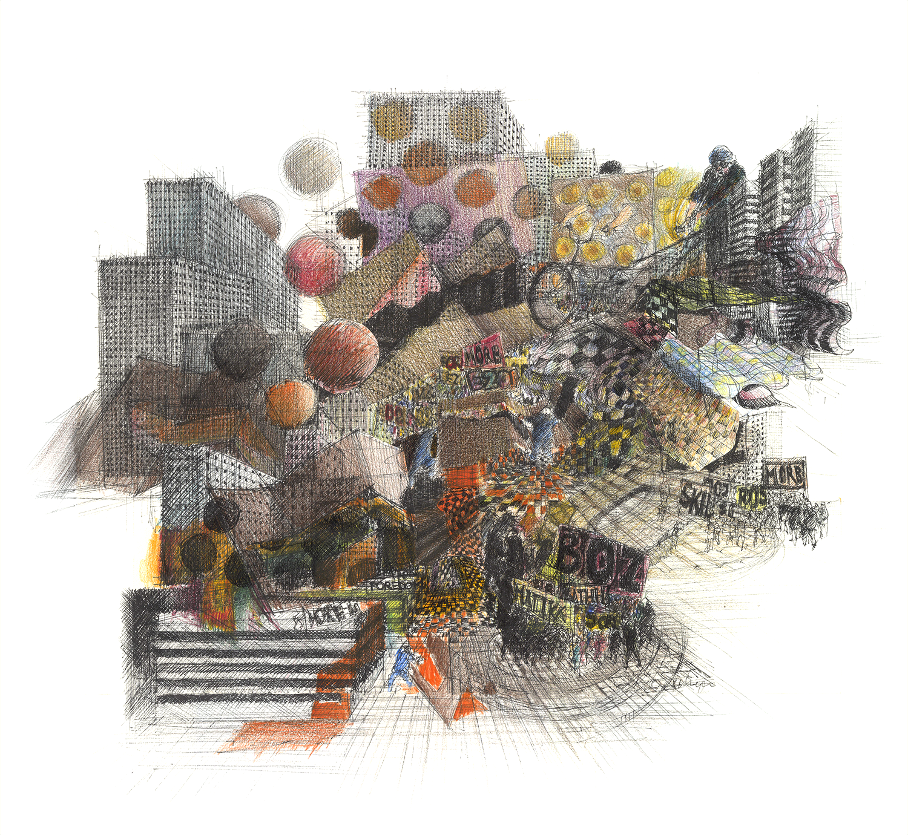

Introduction
For many years the global fashion industry has been faced with major social and environmental challenges, which have increased the urgency to develop production chains that are fairer and more sustainable. It is important to promote changes in consumer behaviour and to explore new business models, digital production methods and sustainable materials. Designers and makers can play a key role in this effort. As part of my master’s research, Recrafting Craft, a Synergy of Crafts within Fashion Design Education at Art Schools in the Netherlands (2016), I organised two roundtable discussions with fashion students and experts in the field. Those conversations revealed that our current educational system fails to adequately prepare future fashion professionals for this role. Although there are understandable reasons for not changing the curricula due to limited funding or expertise, nonetheless as educators we have the responsibility, if not always the opportunity, to reinvent fashion education to meet these challenges.
This publication is the sequel to my previous research in which I analysed the gap between higher education in fashion and the current fashion industry. In that study, I argued that reconceiving the definition and role of ‘craft’ could bridge this gap. The essay concluded with a description of prospective scenarios for fashion schools, written by the architect and researcher Dirk Osinga. His speculative scenarios were an invitation to reflect upon the implementation of new, digital crafts in fashion workshops and imagine an interrelated curriculum. These scenarios are the starting point for this publication and serve as basis for developing alternatives for fashion education outside of the art academy.
Although speculative at this point, the next step is to actually test some of these scenarios, for example by situating a temporary fashion school at a farm, in a biological laboratory or, for that matter, in any other non-conventional location. The aim would be to understand how such environments influence not only the various possibilities of production, equipment and tools, but also how they give shape to didactic models and to the role of the instructor. I believe this will allow students to experiment with sustainable materials and create new forms of production, and also to reflect upon the value of clothing and the overhaul of the entire production chain. The ultimate goal of this project is to connect various stakeholders (designers, instructors, scientists, craftsmen and businesses), in order to bring about real sustainable innovation within today’s fashion education.
Mascha van Zijverden
Mascha van Zijverden is committed to the evolution and advancement of fashion design curricula, and continually questions how educational environments can respond to the current demands and challenges of the fashion industry. She is an advisor at the Creative Industries Fund NL and the Amsterdam Fund for the Arts. She earned a bachelor’s degree in Fashion Design from ArtEZ University of the Arts and holds a master’s degree in Education in Arts from the Piet Zwart Institute.
This publication is the sequel to my previous research in which I analysed the gap between higher education in fashion and the current fashion industry. In that study, I argued that reconceiving the definition and role of ‘craft’ could bridge this gap. The essay concluded with a description of prospective scenarios for fashion schools, written by the architect and researcher Dirk Osinga. His speculative scenarios were an invitation to reflect upon the implementation of new, digital crafts in fashion workshops and imagine an interrelated curriculum. These scenarios are the starting point for this publication and serve as basis for developing alternatives for fashion education outside of the art academy.
‘Creating real and sustainable innovation for tomorrow’s fashion education starts with developing speculative scenarios that explore synergies between traditional and future crafts.’
Within this publication, the artist Georg Bohle interprets Osinga’s speculative scenarios. His drawings offer a utopian impression of the infinite possibilities which can emerge when fashion workshops are located in unconventional contexts. Accompanying Bohle’s work and Osinga’s scenarios are two reflective essays. Oscar Tomico writes about the significance of ‘learning by doing’ and argues for the transformation of fashion workshops into ‘communities of practice’. Bibi Straatman historically contextualises fashion education and emphasises the importance of the ‘what if’ question in initiating change towards possible new futures.Although speculative at this point, the next step is to actually test some of these scenarios, for example by situating a temporary fashion school at a farm, in a biological laboratory or, for that matter, in any other non-conventional location. The aim would be to understand how such environments influence not only the various possibilities of production, equipment and tools, but also how they give shape to didactic models and to the role of the instructor. I believe this will allow students to experiment with sustainable materials and create new forms of production, and also to reflect upon the value of clothing and the overhaul of the entire production chain. The ultimate goal of this project is to connect various stakeholders (designers, instructors, scientists, craftsmen and businesses), in order to bring about real sustainable innovation within today’s fashion education.
Mascha van Zijverden
Mascha van Zijverden is committed to the evolution and advancement of fashion design curricula, and continually questions how educational environments can respond to the current demands and challenges of the fashion industry. She is an advisor at the Creative Industries Fund NL and the Amsterdam Fund for the Arts. She earned a bachelor’s degree in Fashion Design from ArtEZ University of the Arts and holds a master’s degree in Education in Arts from the Piet Zwart Institute.
RECRAFTING CRAFT
With Recrafting Craft, Mascha van Zijverden explores possible new directions for fashion education in exciting and meaningful ways. Nowadays, innovations in fashion are primarily driven by functional and economic motives resulting in fast fashion as big business. This has not only made fashion the second most polluting industry, but has also detached fashion from important socio-cultural values such as its connection to crafts and making skills and its potential to shape cultural meaning, identity and communities in more profound and meaningful ways than corporate branding currently does.
Future education should explore broader cultural values of fashion and urgently address a sustainable approach by embracing new technologies and new imaginations, and above all, replace the star-designer education model with a more collaborative, interdisciplinary project-based approach and entrepreneurial attitude. All these directions are explored in Recrafting Craft in a serious but also playful way. Taking into account that we live in an era of continuously streaming information and knowledge accessibility, where tools and skills can be acquired through the internet and from open-access resources, Van Zijverden is aware that we have to develop this new education from the bottom-up by listening to students and understanding the logic of their ‘horizontal learning style’, while at the same time helping them to explore, and teaching them methodologies and rigour that enable them to critically search, read and use data in order to contextualise their practice.
Prof. José Teunissen
Dean of School of Design and Technology
London College of Fashion (LCF)
An Exploration of Speculative Scenarios for Tomorrow’s Fashion Education
An Exploration of Speculative Scenarios for
Tomorrow’s Fashion Education
PrefaceTomorrow’s Fashion Education
With Recrafting Craft, Mascha van Zijverden explores possible new directions for fashion education in exciting and meaningful ways. Nowadays, innovations in fashion are primarily driven by functional and economic motives resulting in fast fashion as big business. This has not only made fashion the second most polluting industry, but has also detached fashion from important socio-cultural values such as its connection to crafts and making skills and its potential to shape cultural meaning, identity and communities in more profound and meaningful ways than corporate branding currently does.
Future education should explore broader cultural values of fashion and urgently address a sustainable approach by embracing new technologies and new imaginations, and above all, replace the star-designer education model with a more collaborative, interdisciplinary project-based approach and entrepreneurial attitude. All these directions are explored in Recrafting Craft in a serious but also playful way. Taking into account that we live in an era of continuously streaming information and knowledge accessibility, where tools and skills can be acquired through the internet and from open-access resources, Van Zijverden is aware that we have to develop this new education from the bottom-up by listening to students and understanding the logic of their ‘horizontal learning style’, while at the same time helping them to explore, and teaching them methodologies and rigour that enable them to critically search, read and use data in order to contextualise their practice.
Prof. José Teunissen
Dean of School of Design and Technology
London College of Fashion (LCF)
Fashion Education for Critical Consciousness
Bibi Straatman
What if the future fashion school would merge with a biotech research lab at a university? What if, instead of just recycling images and styles superficially, fashion took history seriously? What if the future fashion school creates its own circular economy? What if the future fashion school were to transform shopping malls into hybrid spaces of production?
Change usually pops up from the ‘what if’ questions. What if we took the above questions, from Mascha van Zijverden’s thesis Recrafting Craft, really seriously? These questions were the result of a two-year research of another ‘what if’ question, that I would summarise as: what if we tried to revolutionise fashion by basing contemporary fashion education upon a completely different pedagogical philosophy?
What if fashion schools stopped regenerating and reproducing that simplified myth of fashion’s origins – which goes back to the French Revolution, when fashion started to shift toward modern Western fashion? Indeed, the educational system of the second half of the 20th century mostly trained its students to serve the myth of an ever-accelerating ‘trend logic’ within an ever-growing industry, which claims to bring ‘newness’ through an ongoing production of shifting details. Fashion education since the 1980s has thus served the booming industry of fashion production and branding, which has established itself very firmly at the heart of our modern ‘identity politics’. However, fashion education also failed to analyse the complex entanglement of, on one hand, a growing global clothing industry with, on the other hand, political emancipation movements of citizens and storytelling-based advertisement.
The question thus should be: what if 21st-century fashion education started to deconstruct the superficial and empty myth of newness, and the connected industrial logic of accelerated production through upgrading of minor differences? We could refer here to Sigmund Freud, who bestowed upon us a nice metaphor for shedding a new light upon this aspect of fashion’s modernity: fashion as that well-known narcissistic machinery that is specialised in the production of small but meaningless differences (‘blue is the new black’). Or Karl Marx, who helped us understand that capitalism would substitute use, value and craft with propagandistic visual storytelling (which came to be called ‘public relations’ by Freud’s nephew Edward Bernays). We could read Gilles Lipovetsky on the interrelatedness of the 19th-century relationship to clothing, the emerging logic of large-scale industrial production, and the democratic emancipation of workers (both men and women). Lipovetsky reminded us that we tend to dismiss how (modern western) fashion once started off as the embodiment of a ‘declaration of independence’ of the inhabitants of European metropolitan cities during the 19th and 20th centuries – after the French Revolution had claimed (and reclaimed) the streets for a new type of consumer-citizen, we quickly forgot how utterly extraordinary these new public personae were;the modernised, emancipated citizens who appeared as iconic figures, such as the dandy, or the liberated women who refused to wear corsets in the 19th century;the girls with the bobbed hair of the 1920s, the Chanel suit for women of the 1930s, the teddies of the 1950s, the hippies of the 1960s, the punks of the 1970s, or the street styles of the 1980s.
The fashion school of the future, indeed, would start with yet another ‘what if’: what if we started to remember, and started to look back, not in order to create a fashion museum, but in order to regain our consciousness;which, according to Paolo Freire, is the utterly self-evident goal of education. We would then rediscover the excitement of modern fashion’s origins;of the uproar of its courageous first gestures, beyond the ‘narcissism of the little differences’.
Every now and then someone declares the death of fashion, usually followed by a declaration of independence based upon new insights concerning the system that has entranced us all with its seductive, smooth and addictive logic;the logic of eternal newness, the promise of an eternally rejuvenating new beginning. The latest declaration came from our very own Dutch fashion guru, Lidewij Edelkoort, who announced that fashion is dead, while also indicating the revival of its materiality, the very core of its practice: the making of carefully crafted items of clothing.
The fashion school of the future would thus teach its students – by transforming itself into a laboratory or another type of workshop, as proposed in Van Zijverden’s thesis – that the current system has reached its limits;that we must now address its lack of sustainability and its social problems. The fashion school of the future would search for solutions for the past decades of toxic industrial overproduction. It would focus on the carefully and dedicated crafting of things, in a fair way. It would sustain new dreams of solidarity, of circularity, of sustainability, of slowness. It would function as a rehab. It would expose the internal problems of the existing (production and branding) system. The new school, and especially its students, would remind us of the fact that this major shift is in fact already taking place.
From now on, fashion should no longer renounce ‘tradition’ in favour of some vague ‘modernity’. From now on, fashion should acknowledge differences, and find ways of circumventing the simplistic division of the world into stereotyped oppositions. From now on, we must call fashion our new way of rehabilitating the local. It could equally be called the No-Fashion School – educating society about the good life. The No-Fashion School could be everywhere, preferably where we do not expect it: in marginal zones or ‘bad’ neighbourhoods, in Detroit or in Kerkrade, in the global South, in shantytowns across the USA, in secret women’s homes in Teheran, in abandoned farmhouses in Spain…
Dr. Bibi Straatman is research director of Being Political in Art & Design for the professorship Image in Context at the Minerva Art Academy (Groningen);lecturer of design research methodologies at the Fashion master programmes of ArtEZ University of the Arts (Arnhem) and HKU University of the Arts (Utrecht);and member of Insistance, a Brussels-based research group focusing on the political role of art and psychoanalysis.
Bibliography
BERNAYS, E. (1928) Propaganda. Reprint, New York: Ig Publishing, 2004.
CHOMSKY, N. (2017) Requiem for the American Dream: The 10 Principles of Concentration of Wealth & Power. New York: Seven Stories Press.
EDELKOORT, L. (2014) ANTI_FASHION, A Manifesto for the Next Decade. Paris: Trend Tablet.
FREIRE, P. (1974). Education for Critical Consciousness. Reprint, London: Bloomsbury, 2013.
FREUD, S. (1914). On Narcissism: An Introduction. Reprint, London: Yale University Press, 1991.
KLEIN, N. (1999) No Logo. 2nd ed. Reprint, London: Picador Pan MacMillan, 2002.
LIPOVETSKI, G. (1994) The Empire of Fashion: Dressing Modern Democracy. Reprint, Princeton, USA: Princeton University Press, 2002.
MARX, K. (1867). Capital: A Critique of Political Economy. Vol. 1. [Online] Available from: [Accessed: 14 February 2018].
RANCIÈRE, J. (1991) The Ignorant Schoolmaster: Five Lessons in Intellectual Emancipation. Redwood City, USA: Stanford University Press.
RANCIÈRE, J. (2000) The Politics of Aesthetics. Reprint, London: Continuum International Publishing Group, 2006.
ŽIŽEK, S. (2009) First as Tragedy, Then as Farce. New York: Verso Books.
Bibi Straatman
What if the future fashion school would merge with a biotech research lab at a university? What if, instead of just recycling images and styles superficially, fashion took history seriously? What if the future fashion school creates its own circular economy? What if the future fashion school were to transform shopping malls into hybrid spaces of production?
Change usually pops up from the ‘what if’ questions. What if we took the above questions, from Mascha van Zijverden’s thesis Recrafting Craft, really seriously? These questions were the result of a two-year research of another ‘what if’ question, that I would summarise as: what if we tried to revolutionise fashion by basing contemporary fashion education upon a completely different pedagogical philosophy?
What if fashion schools stopped regenerating and reproducing that simplified myth of fashion’s origins – which goes back to the French Revolution, when fashion started to shift toward modern Western fashion? Indeed, the educational system of the second half of the 20th century mostly trained its students to serve the myth of an ever-accelerating ‘trend logic’ within an ever-growing industry, which claims to bring ‘newness’ through an ongoing production of shifting details. Fashion education since the 1980s has thus served the booming industry of fashion production and branding, which has established itself very firmly at the heart of our modern ‘identity politics’. However, fashion education also failed to analyse the complex entanglement of, on one hand, a growing global clothing industry with, on the other hand, political emancipation movements of citizens and storytelling-based advertisement.
The question thus should be: what if 21st-century fashion education started to deconstruct the superficial and empty myth of newness, and the connected industrial logic of accelerated production through upgrading of minor differences? We could refer here to Sigmund Freud, who bestowed upon us a nice metaphor for shedding a new light upon this aspect of fashion’s modernity: fashion as that well-known narcissistic machinery that is specialised in the production of small but meaningless differences (‘blue is the new black’). Or Karl Marx, who helped us understand that capitalism would substitute use, value and craft with propagandistic visual storytelling (which came to be called ‘public relations’ by Freud’s nephew Edward Bernays). We could read Gilles Lipovetsky on the interrelatedness of the 19th-century relationship to clothing, the emerging logic of large-scale industrial production, and the democratic emancipation of workers (both men and women). Lipovetsky reminded us that we tend to dismiss how (modern western) fashion once started off as the embodiment of a ‘declaration of independence’ of the inhabitants of European metropolitan cities during the 19th and 20th centuries – after the French Revolution had claimed (and reclaimed) the streets for a new type of consumer-citizen, we quickly forgot how utterly extraordinary these new public personae were;the modernised, emancipated citizens who appeared as iconic figures, such as the dandy, or the liberated women who refused to wear corsets in the 19th century;the girls with the bobbed hair of the 1920s, the Chanel suit for women of the 1930s, the teddies of the 1950s, the hippies of the 1960s, the punks of the 1970s, or the street styles of the 1980s.
The fashion school of the future, indeed, would start with yet another ‘what if’: what if we started to remember, and started to look back, not in order to create a fashion museum, but in order to regain our consciousness;which, according to Paolo Freire, is the utterly self-evident goal of education. We would then rediscover the excitement of modern fashion’s origins;of the uproar of its courageous first gestures, beyond the ‘narcissism of the little differences’.
‘The fashion school of the future would search for solutions for the past decades of toxic industrial overproduction.’
I have witnessed firsthand, as an ‘ignorant schoolmaster’, how students started to question the silent kidnapping of the libertine roots of fashion by the consumerist logic of ever-growing mass production. In the late 1990s, when I tried to address the hidden structure of neoliberal capitalism (so elegantly denounced by thinkers such as Naomi Klein, Slavoj Žižek and Noam Chomsky), students were still puzzled by my interventions, and would ask me if I was ‘a communist’. Nowadays, there is no student who does not criticise the suspicious, toxic interwovenness and complicity of the goals of mass production with a propagandistic and utterly idle quest for ‘newness’. There is no student who is not aware of the strategic and political deployment of the ‘front offices’ of fashion brands (selling the superficial but irresistible messages of modernity that have shifted the originally political inspiration of modern western fashion into a buying addiction), while hiding from view the hideous and inhuman ‘back offices’ of the reality of fashion production. And I call, with Rancière, political that which has the power to shift our minds by influencing our gaze…Every now and then someone declares the death of fashion, usually followed by a declaration of independence based upon new insights concerning the system that has entranced us all with its seductive, smooth and addictive logic;the logic of eternal newness, the promise of an eternally rejuvenating new beginning. The latest declaration came from our very own Dutch fashion guru, Lidewij Edelkoort, who announced that fashion is dead, while also indicating the revival of its materiality, the very core of its practice: the making of carefully crafted items of clothing.
The fashion school of the future would thus teach its students – by transforming itself into a laboratory or another type of workshop, as proposed in Van Zijverden’s thesis – that the current system has reached its limits;that we must now address its lack of sustainability and its social problems. The fashion school of the future would search for solutions for the past decades of toxic industrial overproduction. It would focus on the carefully and dedicated crafting of things, in a fair way. It would sustain new dreams of solidarity, of circularity, of sustainability, of slowness. It would function as a rehab. It would expose the internal problems of the existing (production and branding) system. The new school, and especially its students, would remind us of the fact that this major shift is in fact already taking place.
From now on, fashion should no longer renounce ‘tradition’ in favour of some vague ‘modernity’. From now on, fashion should acknowledge differences, and find ways of circumventing the simplistic division of the world into stereotyped oppositions. From now on, we must call fashion our new way of rehabilitating the local. It could equally be called the No-Fashion School – educating society about the good life. The No-Fashion School could be everywhere, preferably where we do not expect it: in marginal zones or ‘bad’ neighbourhoods, in Detroit or in Kerkrade, in the global South, in shantytowns across the USA, in secret women’s homes in Teheran, in abandoned farmhouses in Spain…
Dr. Bibi Straatman is research director of Being Political in Art & Design for the professorship Image in Context at the Minerva Art Academy (Groningen);lecturer of design research methodologies at the Fashion master programmes of ArtEZ University of the Arts (Arnhem) and HKU University of the Arts (Utrecht);and member of Insistance, a Brussels-based research group focusing on the political role of art and psychoanalysis.
Bibliography
BERNAYS, E. (1928) Propaganda. Reprint, New York: Ig Publishing, 2004.
CHOMSKY, N. (2017) Requiem for the American Dream: The 10 Principles of Concentration of Wealth & Power. New York: Seven Stories Press.
EDELKOORT, L. (2014) ANTI_FASHION, A Manifesto for the Next Decade. Paris: Trend Tablet.
FREIRE, P. (1974). Education for Critical Consciousness. Reprint, London: Bloomsbury, 2013.
FREUD, S. (1914). On Narcissism: An Introduction. Reprint, London: Yale University Press, 1991.
KLEIN, N. (1999) No Logo. 2nd ed. Reprint, London: Picador Pan MacMillan, 2002.
LIPOVETSKI, G. (1994) The Empire of Fashion: Dressing Modern Democracy. Reprint, Princeton, USA: Princeton University Press, 2002.
MARX, K. (1867). Capital: A Critique of Political Economy. Vol. 1. [Online] Available from: [Accessed: 14 February 2018].
RANCIÈRE, J. (1991) The Ignorant Schoolmaster: Five Lessons in Intellectual Emancipation. Redwood City, USA: Stanford University Press.
RANCIÈRE, J. (2000) The Politics of Aesthetics. Reprint, London: Continuum International Publishing Group, 2006.
ŽIŽEK, S. (2009) First as Tragedy, Then as Farce. New York: Verso Books.
What Does it Take to Make Room for Innovation?
Oscar Tomico
Innovation in textiles and fashion seems to take place outside of art schools. One could argue that there may be no room in the curriculum, or that it could be too early to implement assignments based on the use of new technologies. On the other hand, one may wonder about the reasons for such a rejection of ‘new’ technologies, and the prevailing devotion to ‘traditional’ crafts. The only difference between crafts and technology is the moment in time from where you look at them.
Crafts relate to the past and to tradition. They are a mastered technology. Technology, on the other hand, is something new, it is the future. It is unknown for many. Let us consider for example textiles. Jacquard weaving looms can be found in most fashion schools. They were invented at the same time as computers. They are actually based upon a binary code of ones and zeros. Most of them require ‘programming’ the woven textiles by means of a mechanical interface: a punch card or a computer. An expert in utilising jacquard looms is even called a textile developer, which closely resembles the term software developer. But how many fashion students can write code?
In order to support a renewed interest in making and experimentation with new technologies, fashion schools should rethink the position of workshops in their teaching practice. Reintegrating a culture of prototyping that goes beyond traditional tools and machinery is by no means an easy task. Investing in new infrastructure in order to address current technological trends such as digital fabrication, wearable technology, biotechnology, sustainability, circular economy, or personalisation is a relatively simple but insufficient step.
Fashion schools are already purchasing 3D printers and a few electronic components such as sensors and actuators, installing 3D scanning rooms, or building biotech labs. However, these are by no means the only ingredients in a recipe for success: their mere presence is no guarantee that the shiny new labs will actually be used to their full extent. In order to do that, we really need to further explore how fashion – and fashion schools – should address new technological developments.
Fashion considers the future from the perspective of the past. It reinvents nostalgia and reinterprets culture. Fashion is partially inspired by social points of reference. New technological developments, however, still lack such points of reference. Using new technologies in a way that is more than just a cultural symbol, requires an understanding of how these technologies are currently being adopted by society. Fashion designers need examples, stories, and a personal relationship that can only be acquired by actually being where technologies are discovered, developed or used on a day-to-day basis.
A successful integration of new tools and techniques requires an approach to education that supports learning by doing and the creation of communities of practice. Learning needs to take place where the action is. This is why rethinking the fashion workshop environment is such an important issue. It is not just the space or the infrastructure that makes a workshop thrive: it’s also the people and the activities happening there. It is the peer-to-peer exchange of knowledge, the expert-to-expert relations that can only occur when the workshop is full of activity.
The use of blogs and tutorials is not sufficient to compensate for the lack of expertise (in fashion education) with some of the necessary tools, processes and materials. Budgetary cuts, and the wide variety of technologies and tools being developed, have made it an extremely challenging (or even impossible) task to set up the ideal workshop in a fashion school. Artificial master-apprentice relationships based on ‘employed’ technicians, as are currently the case, need to be rethought. If we can’t hire the necessary expertise and bring it to the school, should we then move the workshop to where the expertise resides? Does the workshop even need to be in a school? Can fashion schools move to where important labs, workshops or studios are located? To where the experts work?
Fashion design collectives are of course nothing new, and are also quite common nowadays in fashion and product design. Over the years there have been several well-known fashion design duos with clearly divided responsibilities and skills;fashion designers graduating from the same school and formulating a manifesto together;and even fashion brands that make a special effort to establish a horizontal organisational structure, rather than being led by a head designer. Interestingly enough, most of these efforts emerged while the designers involved were still completing their studies. Yet, fashion schools have not traditionally encouraged collaborative efforts. It is no coincidence that the priority of fashion schools has traditionally focused on the individual. Combining the education of individual designers with the support of emerging groups of designers brings with it a number of implications for how art and fashion should be taught.
Within a collective, students need to develop their personal identity as well as their ability to combine this identity with that of others in order to create the ‘DNA’ of the group. Combining skills, knowledge and attitudes in the context of a small exercise is easy. The real challenges arise when students need to find out who they can best work with, develop a group identity, and share responsibilities. For educators, the evaluation of a group project also presents a number of difficulties. It requires clearly structuring a process in a way that allows for a combination of collective work and individual reflections. Moreover, these and other issues are amplified by the fact that art schools traditionally have small numbers of students within any given year. Could each class become a fashion collective? Would that always work out?
Communities of practice becoming collectives, and schools moving out of traditional educational settings – where will all of this take us? This publication speculates on the future of fashion schools by transforming them into a biotech lab, a sustainable farm, a shopping mall, a museum archive, a fab lab in a garage, or even a city.
Oscar Tomico is head of the Design Engineering bachelor programme at the ELISAVA School of Design and Engineering (Barcelona), and assistant professor of Industrial Design at the Eindhoven University of Technology, working on ‘soft interactions’ for the Wearable Senses Lab.
Oscar Tomico
Innovation in textiles and fashion seems to take place outside of art schools. One could argue that there may be no room in the curriculum, or that it could be too early to implement assignments based on the use of new technologies. On the other hand, one may wonder about the reasons for such a rejection of ‘new’ technologies, and the prevailing devotion to ‘traditional’ crafts. The only difference between crafts and technology is the moment in time from where you look at them.
Crafts relate to the past and to tradition. They are a mastered technology. Technology, on the other hand, is something new, it is the future. It is unknown for many. Let us consider for example textiles. Jacquard weaving looms can be found in most fashion schools. They were invented at the same time as computers. They are actually based upon a binary code of ones and zeros. Most of them require ‘programming’ the woven textiles by means of a mechanical interface: a punch card or a computer. An expert in utilising jacquard looms is even called a textile developer, which closely resembles the term software developer. But how many fashion students can write code?
In order to support a renewed interest in making and experimentation with new technologies, fashion schools should rethink the position of workshops in their teaching practice. Reintegrating a culture of prototyping that goes beyond traditional tools and machinery is by no means an easy task. Investing in new infrastructure in order to address current technological trends such as digital fabrication, wearable technology, biotechnology, sustainability, circular economy, or personalisation is a relatively simple but insufficient step.
Fashion schools are already purchasing 3D printers and a few electronic components such as sensors and actuators, installing 3D scanning rooms, or building biotech labs. However, these are by no means the only ingredients in a recipe for success: their mere presence is no guarantee that the shiny new labs will actually be used to their full extent. In order to do that, we really need to further explore how fashion – and fashion schools – should address new technological developments.
Fashion considers the future from the perspective of the past. It reinvents nostalgia and reinterprets culture. Fashion is partially inspired by social points of reference. New technological developments, however, still lack such points of reference. Using new technologies in a way that is more than just a cultural symbol, requires an understanding of how these technologies are currently being adopted by society. Fashion designers need examples, stories, and a personal relationship that can only be acquired by actually being where technologies are discovered, developed or used on a day-to-day basis.
A successful integration of new tools and techniques requires an approach to education that supports learning by doing and the creation of communities of practice. Learning needs to take place where the action is. This is why rethinking the fashion workshop environment is such an important issue. It is not just the space or the infrastructure that makes a workshop thrive: it’s also the people and the activities happening there. It is the peer-to-peer exchange of knowledge, the expert-to-expert relations that can only occur when the workshop is full of activity.
The use of blogs and tutorials is not sufficient to compensate for the lack of expertise (in fashion education) with some of the necessary tools, processes and materials. Budgetary cuts, and the wide variety of technologies and tools being developed, have made it an extremely challenging (or even impossible) task to set up the ideal workshop in a fashion school. Artificial master-apprentice relationships based on ‘employed’ technicians, as are currently the case, need to be rethought. If we can’t hire the necessary expertise and bring it to the school, should we then move the workshop to where the expertise resides? Does the workshop even need to be in a school? Can fashion schools move to where important labs, workshops or studios are located? To where the experts work?
‘A successful integration of new tools and techniques requires an approach to education that supports learning by doing and the creation of communities of practice.’
It is definitely worth examining how fashion schools deal with teaching new technological developments. If one considers the long list of requirements and opportunities in relation to the future profession of fashion students, one may wonder whether it is asking too much for ‘individual’ designers to embrace all these different technological trends. The level of complexity required in order to deal with digital fabrication, wearable technology, biotechnology, sustainability, circular economy, or personalisation should not be underestimated. It seems more suitable to a group effort, in which everyone assumes a role based on their own expertise and expectations. Fashion design collectives are of course nothing new, and are also quite common nowadays in fashion and product design. Over the years there have been several well-known fashion design duos with clearly divided responsibilities and skills;fashion designers graduating from the same school and formulating a manifesto together;and even fashion brands that make a special effort to establish a horizontal organisational structure, rather than being led by a head designer. Interestingly enough, most of these efforts emerged while the designers involved were still completing their studies. Yet, fashion schools have not traditionally encouraged collaborative efforts. It is no coincidence that the priority of fashion schools has traditionally focused on the individual. Combining the education of individual designers with the support of emerging groups of designers brings with it a number of implications for how art and fashion should be taught.
Within a collective, students need to develop their personal identity as well as their ability to combine this identity with that of others in order to create the ‘DNA’ of the group. Combining skills, knowledge and attitudes in the context of a small exercise is easy. The real challenges arise when students need to find out who they can best work with, develop a group identity, and share responsibilities. For educators, the evaluation of a group project also presents a number of difficulties. It requires clearly structuring a process in a way that allows for a combination of collective work and individual reflections. Moreover, these and other issues are amplified by the fact that art schools traditionally have small numbers of students within any given year. Could each class become a fashion collective? Would that always work out?
Communities of practice becoming collectives, and schools moving out of traditional educational settings – where will all of this take us? This publication speculates on the future of fashion schools by transforming them into a biotech lab, a sustainable farm, a shopping mall, a museum archive, a fab lab in a garage, or even a city.
Oscar Tomico is head of the Design Engineering bachelor programme at the ELISAVA School of Design and Engineering (Barcelona), and assistant professor of Industrial Design at the Eindhoven University of Technology, working on ‘soft interactions’ for the Wearable Senses Lab.
Speculative Scenarios for Fashion Schools
Dirk Osinga
Introduction
Which role could the fashion school play in shaping the future of fashion? These six rudimentary scenarios are meant as an invitation to think about how the fashion school of the future could function – an invitation which reflects upon, and goes beyond, current changes inside and outside the fashion industry. Some of these ideas acknowledge what is already happening today, while others are an attempt to be more innovative. They are not exclusive scenarios, with the aim of being realised;some should be combined or even rejected. So these scenarios, rather than serving as concrete proposals, were conceived as starting points for a discussion. The initial scenarios discussed below were formulated on the basis of several premises. The first is that in the Western world there is arguably a need to move away from an individualistic society based on consumerism and global production, towards a more socio-centric organised society with localised forms of production. In other parts of the world we see an opposite tendency. This may imply for the world of fashion that a so-called hyper-individualistic fashion needs to be complemented by a fashion which is the expression of multiple collective identities. Furthermore, in order to take an integral approach towards changing the fashion industry and overcoming the boundaries between disciplines and different levels of education, advanced fashion education could collaborate with research universities as well as vocational education and training (VET) institutes in working with traditional and future crafts. Additionally, fashion education should move from an exclusive focus on haute couture to a more research-based approach in order to tackle social and environmental issues such as resource scarcity and climate change. All of this may well contribute to a renewed relevance of fashion, one that goes beyond fast fashion and its dichotomy of haute couture and ready-to-wear.
Dirk Osinga is an architect and researcher, and founder of the design research collective The Workshop Workshop. He is also a PhD candidate within the research group ‘Spatial Capacity Building’ at Hasselt University (Belgium) focusing on the innovation of learning environments.
Georg Bohle is an artist who draws compositional structures, constructed out of a multitude of artificial and organic textural shapes, often representing imaginary cities and landscapes. He teaches at the Delft University of Technology (Netherlands) and regularly exhibits his drawings in the Netherlands and abroad.
Dirk Osinga
Introduction
Which role could the fashion school play in shaping the future of fashion? These six rudimentary scenarios are meant as an invitation to think about how the fashion school of the future could function – an invitation which reflects upon, and goes beyond, current changes inside and outside the fashion industry. Some of these ideas acknowledge what is already happening today, while others are an attempt to be more innovative. They are not exclusive scenarios, with the aim of being realised;some should be combined or even rejected. So these scenarios, rather than serving as concrete proposals, were conceived as starting points for a discussion. The initial scenarios discussed below were formulated on the basis of several premises. The first is that in the Western world there is arguably a need to move away from an individualistic society based on consumerism and global production, towards a more socio-centric organised society with localised forms of production. In other parts of the world we see an opposite tendency. This may imply for the world of fashion that a so-called hyper-individualistic fashion needs to be complemented by a fashion which is the expression of multiple collective identities. Furthermore, in order to take an integral approach towards changing the fashion industry and overcoming the boundaries between disciplines and different levels of education, advanced fashion education could collaborate with research universities as well as vocational education and training (VET) institutes in working with traditional and future crafts. Additionally, fashion education should move from an exclusive focus on haute couture to a more research-based approach in order to tackle social and environmental issues such as resource scarcity and climate change. All of this may well contribute to a renewed relevance of fashion, one that goes beyond fast fashion and its dichotomy of haute couture and ready-to-wear.
Dirk Osinga is an architect and researcher, and founder of the design research collective The Workshop Workshop. He is also a PhD candidate within the research group ‘Spatial Capacity Building’ at Hasselt University (Belgium) focusing on the innovation of learning environments.
Georg Bohle is an artist who draws compositional structures, constructed out of a multitude of artificial and organic textural shapes, often representing imaginary cities and landscapes. He teaches at the Delft University of Technology (Netherlands) and regularly exhibits his drawings in the Netherlands and abroad.
THE BIOTECH FASHION SCHOOL
 The fashion school as a laboratory
The fashion school as a laboratory
What if the fashion school would merge with a biotech research lab at a university? Fashion designers would collaborate with scientists to grow genetically modified textiles and in-vitro leathers in laboratory conditions. By experimenting with colours, transparencies, textures, patterns and softness through bio-hacking and craft production methods, these bio-fashion designers and biological and chemistry scientists may well develop truly sustainable and biodegradable fabrics that can even grow into predetermined shapes, like the skins of mammalian bodies. The garments produced in this school may even result in a ‘living’ fashion, one that acts as an interface or an extension of the human body and mimics various heating and cooling mechanisms seen in nature. This radically new fashion might even act as a kind of bacterial shield against a multitude of superbugs. Living fashion would blur the boundaries between nature and culture, and potentially contribute to crossbreeding of all kinds of strange but wonderful hybrids. Imagination and exploration often start small, but through learning by doing, real innovations can be brought about. Can fast fashion be superseded by a superfast biodegradable fashion?

The fashion school as a laboratoryWhat if the fashion school would merge with a biotech research lab at a university? Fashion designers would collaborate with scientists to grow genetically modified textiles and in-vitro leathers in laboratory conditions. By experimenting with colours, transparencies, textures, patterns and softness through bio-hacking and craft production methods, these bio-fashion designers and biological and chemistry scientists may well develop truly sustainable and biodegradable fabrics that can even grow into predetermined shapes, like the skins of mammalian bodies. The garments produced in this school may even result in a ‘living’ fashion, one that acts as an interface or an extension of the human body and mimics various heating and cooling mechanisms seen in nature. This radically new fashion might even act as a kind of bacterial shield against a multitude of superbugs. Living fashion would blur the boundaries between nature and culture, and potentially contribute to crossbreeding of all kinds of strange but wonderful hybrids. Imagination and exploration often start small, but through learning by doing, real innovations can be brought about. Can fast fashion be superseded by a superfast biodegradable fashion?
THE NATURAL FASHION SCHOOL

 The fashion school as a farm
The fashion school as a farm
What if the fashion school of the future created its own circular economy? Europe once had a blossoming textile industry. Can it be revived? This fashion school takes scarcity, resource management and frugal lifestyles seriously. It could be situated in the countryside as a semi-autonomous community, which generates its own fibres from agricultural sources by growing plants and rearing animals, and processes these fibres and wool into naturally dyed, high-quality fabrics which are adapted to local conditions. From crop to garment. This fashion school rediscovers the potential of native natural fibres, from flax to seaweed and from hemp to mycelium, with the help of open-source digital fabrication methods. Spinning, weaving, sewing and embroidering all take place under one roof, merging crafts with the arts, to create a durable and highly tactile fashion. Perhaps it would even be possible to locate this school within urban settings. What about harvesting, for instance, the surfaces of hairy buildings? Continuing the tradition of countercultural communities of the sixties with its DIY ethics, open-source technology and communal off-the-grid living, while also taking inspiration from indigenous cultures through anthropological research from around the world, this school will foster a relational society that reconnects with the landscape and will possibly regain a cosmic relation through its super-slow fashion. Fast is exciting but slow is enduring.
The fashion school as a farmWhat if the fashion school of the future created its own circular economy? Europe once had a blossoming textile industry. Can it be revived? This fashion school takes scarcity, resource management and frugal lifestyles seriously. It could be situated in the countryside as a semi-autonomous community, which generates its own fibres from agricultural sources by growing plants and rearing animals, and processes these fibres and wool into naturally dyed, high-quality fabrics which are adapted to local conditions. From crop to garment. This fashion school rediscovers the potential of native natural fibres, from flax to seaweed and from hemp to mycelium, with the help of open-source digital fabrication methods. Spinning, weaving, sewing and embroidering all take place under one roof, merging crafts with the arts, to create a durable and highly tactile fashion. Perhaps it would even be possible to locate this school within urban settings. What about harvesting, for instance, the surfaces of hairy buildings? Continuing the tradition of countercultural communities of the sixties with its DIY ethics, open-source technology and communal off-the-grid living, while also taking inspiration from indigenous cultures through anthropological research from around the world, this school will foster a relational society that reconnects with the landscape and will possibly regain a cosmic relation through its super-slow fashion. Fast is exciting but slow is enduring.
THE HIGH STREET FASHION SCHOOL

 The fashion school as a shopping mall
The fashion school as a shopping mall
What if fashion schools were to appropriate shopping malls and transform spaces of pure consumption into hybrid spaces of production? This fashion school could educate a broad range of specialised professionals in design, sales, personal identity and brand management. Can high fashion reclaim the street, and can the street be high-end? With the ongoing development of technology, fashion schools can stimulate localised forms of production through digital fabrication, and thus can renew the art of fashion. Digital fabrication makes it possible to mass-produce items that can be highly personalised. Robotic arms weave 3D forms overnight that fit the unique, digitally scanned body shape of the customer. The fashion school as a shopping mall allows fashion students to get back in touch with people;at the same time, it also allows people to engage with fashion in new ways, and to learn about themselves and the garments they wear. This school can have a direct influence on what people wear on the street and thereby inform a local fashion culture. If fashion is about identity, can this fashion school help to build up multiple, imagined and real personal identities together with people on the street? These days everybody is wearing the same type of garments with imposed slogans and brand names. Can fashion students together with poets and lyricists develop personal texts that can be applied or woven into fabrics to create meaningful personal identities? Sometimes reality is the strangest fantasy of all.
The fashion school as a shopping mallWhat if fashion schools were to appropriate shopping malls and transform spaces of pure consumption into hybrid spaces of production? This fashion school could educate a broad range of specialised professionals in design, sales, personal identity and brand management. Can high fashion reclaim the street, and can the street be high-end? With the ongoing development of technology, fashion schools can stimulate localised forms of production through digital fabrication, and thus can renew the art of fashion. Digital fabrication makes it possible to mass-produce items that can be highly personalised. Robotic arms weave 3D forms overnight that fit the unique, digitally scanned body shape of the customer. The fashion school as a shopping mall allows fashion students to get back in touch with people;at the same time, it also allows people to engage with fashion in new ways, and to learn about themselves and the garments they wear. This school can have a direct influence on what people wear on the street and thereby inform a local fashion culture. If fashion is about identity, can this fashion school help to build up multiple, imagined and real personal identities together with people on the street? These days everybody is wearing the same type of garments with imposed slogans and brand names. Can fashion students together with poets and lyricists develop personal texts that can be applied or woven into fabrics to create meaningful personal identities? Sometimes reality is the strangest fantasy of all.
THE FASHION MUSEUM SCHOOL
 The fashion school as an archive
The fashion school as an archive
What if, instead of just superficially recycling images and styles, fashion took history seriously? How was fashion previously used, for example, as an expression of culture, or to form the identity of particular groups in society? And what about the present: could this research be complemented by a contemporary anthropology? What are the relationships between fashion and the other arts and sciences? And what kinds of materials and techniques have been used in days long gone? Research of the past can prove to be a rich source for creating a renewed future fashion culture. The Fashion Museum School as a guardian of knowledge of materials. Fashioning our collective memory. The museum as a school provides the opportunity to combine education with research, experimentation and presentation. The fashion school as an archive could also, for example, create new common cultural symbols, instead of the commercial brand logos or the semi-personal tattoos people nowadays wear to express their identity. And what is a brand anyway, and why do we need it? And what stories of the social and ecological consequences of fashion can be told? The Fashion Museum School also invites both amateurs and experts for courses, debates and lectures. It is an open space for social learning. The space of a museum provides time for collective and individual reflection. Fashion can stare back into its own mirror and develop the discipline from within. Open up spaces for different times. Furthermore the school could not only teach designer craftsmen and craftswomen but also scientists, professional curators and writers. A museum is not just about (re)presentation and (re)collection – it is also a place where fashion can be created and of course celebrated.

The fashion school as an archiveWhat if, instead of just superficially recycling images and styles, fashion took history seriously? How was fashion previously used, for example, as an expression of culture, or to form the identity of particular groups in society? And what about the present: could this research be complemented by a contemporary anthropology? What are the relationships between fashion and the other arts and sciences? And what kinds of materials and techniques have been used in days long gone? Research of the past can prove to be a rich source for creating a renewed future fashion culture. The Fashion Museum School as a guardian of knowledge of materials. Fashioning our collective memory. The museum as a school provides the opportunity to combine education with research, experimentation and presentation. The fashion school as an archive could also, for example, create new common cultural symbols, instead of the commercial brand logos or the semi-personal tattoos people nowadays wear to express their identity. And what is a brand anyway, and why do we need it? And what stories of the social and ecological consequences of fashion can be told? The Fashion Museum School also invites both amateurs and experts for courses, debates and lectures. It is an open space for social learning. The space of a museum provides time for collective and individual reflection. Fashion can stare back into its own mirror and develop the discipline from within. Open up spaces for different times. Furthermore the school could not only teach designer craftsmen and craftswomen but also scientists, professional curators and writers. A museum is not just about (re)presentation and (re)collection – it is also a place where fashion can be created and of course celebrated.
THE FASHION ENGINEERING SCHOOL
 The fashion school as a garage
The fashion school as a garage
What if fashion students, in addition to their fashion craft skills such as sewing and weaving, learned to code and tinker with technology? Would we get programmable fabrics? Or woven software? How could digital culture influence fashion and vice versa? Will wearable technology ever break through? Wouldn’t it be great if you could digitally change the colour of your shirt to match with your newly bought trousers? Or wear plug-in fashion that measures your mood through your garments? Expressing emotional feedback loops which heighten awareness and facilitate communication. And what about sustainable fashion as a form of heating and cooling of the body? That would be much more efficient than insulating and regulating our buildings. Students of this school could also look into the life cycle and the supply chain of garments, and develop closed-loop systems or new tools, such as robots, for sorting and processing recycled textiles. Developments in the science of materials, the miniaturisation of electronics and artificial intelligence could radically change fashion. And based on Moore’s law, the accessibility of these technologies is closer within reach for education than ever before. The Fashion Engineering school would be using and abusing these technologies which could for example lead to cloaking devices, electromagnetic shields, or garments that function as data collection devices. This fashion school could also focus on the performance of fashion in normal as well as extreme conditions: for example protective and performance-enhancing garments with augmented capabilities for use in sports and on the job or even for outer space exploration. There are many ways in which technology can be integrated into fabrics and fashion into technology. Without crossovers it is hard to arrive at real innovation;it is on the boundaries of disciplines that the excitement takes place.

The fashion school as a garageWhat if fashion students, in addition to their fashion craft skills such as sewing and weaving, learned to code and tinker with technology? Would we get programmable fabrics? Or woven software? How could digital culture influence fashion and vice versa? Will wearable technology ever break through? Wouldn’t it be great if you could digitally change the colour of your shirt to match with your newly bought trousers? Or wear plug-in fashion that measures your mood through your garments? Expressing emotional feedback loops which heighten awareness and facilitate communication. And what about sustainable fashion as a form of heating and cooling of the body? That would be much more efficient than insulating and regulating our buildings. Students of this school could also look into the life cycle and the supply chain of garments, and develop closed-loop systems or new tools, such as robots, for sorting and processing recycled textiles. Developments in the science of materials, the miniaturisation of electronics and artificial intelligence could radically change fashion. And based on Moore’s law, the accessibility of these technologies is closer within reach for education than ever before. The Fashion Engineering school would be using and abusing these technologies which could for example lead to cloaking devices, electromagnetic shields, or garments that function as data collection devices. This fashion school could also focus on the performance of fashion in normal as well as extreme conditions: for example protective and performance-enhancing garments with augmented capabilities for use in sports and on the job or even for outer space exploration. There are many ways in which technology can be integrated into fabrics and fashion into technology. Without crossovers it is hard to arrive at real innovation;it is on the boundaries of disciplines that the excitement takes place.
THE NO-FASHION SCHOOL
 The fashion school everywhere
The fashion school everywhere
An almost suspicious number of well-known fashion designers say that there are enough fashion designers. Some even say fashion is dead. And who wants to be a fashion designer anyway? Producing six to nine collections a year? Designers have become stylists. But, wait a minute, wasn’t fashion about beauty and style? About a vision of society? About traditional crafts and modern technology? About sensuality, boldness and playfulness? Many people feel that the world could use more of that. So, what if the No-Fashion School did not educate fashion designers in the traditional sense, but instead taught professionals to apply fashion wherever it is needed most, which is everywhere: at work and in the city, at home and in politics, in science and in technology? Educating society about the good life. The No-Fashion School could be everywhere. Or should the No-Fashion School concentrate only on clothing? Aren’t we all wearing the same comfortable clothes everywhere, from jeans to t-shirts and from skirts to suits? Luxury has lost its meaning. The No-Fashion School would start where it all began: with clothing. By blurring the boundaries between nationalities, groups and genders, creating a generic sustainable fashion, we have reached our destination, the end of our journey;back to the start.

The fashion school everywhereAn almost suspicious number of well-known fashion designers say that there are enough fashion designers. Some even say fashion is dead. And who wants to be a fashion designer anyway? Producing six to nine collections a year? Designers have become stylists. But, wait a minute, wasn’t fashion about beauty and style? About a vision of society? About traditional crafts and modern technology? About sensuality, boldness and playfulness? Many people feel that the world could use more of that. So, what if the No-Fashion School did not educate fashion designers in the traditional sense, but instead taught professionals to apply fashion wherever it is needed most, which is everywhere: at work and in the city, at home and in politics, in science and in technology? Educating society about the good life. The No-Fashion School could be everywhere. Or should the No-Fashion School concentrate only on clothing? Aren’t we all wearing the same comfortable clothes everywhere, from jeans to t-shirts and from skirts to suits? Luxury has lost its meaning. The No-Fashion School would start where it all began: with clothing. By blurring the boundaries between nationalities, groups and genders, creating a generic sustainable fashion, we have reached our destination, the end of our journey;back to the start.
Abstract
This publication is the sequel to the research Recrafting Craft, a Synergy of Crafts within Fashion Design Education at Art Schools in the Netherlands (2016), which analysed the gap between the current fashion industry and higher education in the field of fashion. In addition to that study, a series of speculative scenarios for tomorrow’s fashion education were developed, which are an invitation to reflect upon the implementation of new digital crafts in fashion workshops and in the related curricula. These rudimentary scenarios provide a foundation for developing alternatives outside of art schools in order to bring about real sustainable innovation within today’s fashion education.
Hybrid Publishing
This publication was developed by Hybrid Publishing, founded by the Willem de Kooning Academy as a means of profiling and disseminating outstanding research conducted by its students and teaching staff, whether independently or in collaboration with external partners. Researching and experimenting across a broad range of processes native to digital and analog media, WdKA Hybrid Publishing fosters novel approaches to design, authoring, reading and dissemination made possible through ongoing developments from the legacies of Gutenberg’s press to present-day technologies.
HP Research Awards
The HP Research Awards series showcases the work of recipients of the Willem de Kooning Research Award. Established by the Willem de Kooning Foundation, the awards are granted to outstanding students whose graduation projects and research have helped provide new insights to broader audiences.
For a digital version of this and other publications, go to Colophon
Recrafting Craft © 2018 Mascha van Zijverden
Developed by Hybrid Publishing,
Willem de Kooning Academy
All rights reserved
ISBN 978-94-92479-06-8
Preface: José Teunissen
Research and introduction: Mascha van Zijverden Scenarios: Dirk Osinga Drawings: Georg Bohle Essays: Bibi Straatman and Oscar Tomico
Editor: Renée Turner
Copy editing: Johanna Monk
Coordinators: Loes Sikkes and Kimmy Spreeuwenberg
Design and development: Megan Hoogenboom Printed by: Newspaper Club
Cover printed by: Veenman+
This publication is the sequel to the research Recrafting Craft, a Synergy of Crafts within Fashion Design Education at Art Schools in the Netherlands (2016), which analysed the gap between the current fashion industry and higher education in the field of fashion. In addition to that study, a series of speculative scenarios for tomorrow’s fashion education were developed, which are an invitation to reflect upon the implementation of new digital crafts in fashion workshops and in the related curricula. These rudimentary scenarios provide a foundation for developing alternatives outside of art schools in order to bring about real sustainable innovation within today’s fashion education.
Hybrid Publishing
This publication was developed by Hybrid Publishing, founded by the Willem de Kooning Academy as a means of profiling and disseminating outstanding research conducted by its students and teaching staff, whether independently or in collaboration with external partners. Researching and experimenting across a broad range of processes native to digital and analog media, WdKA Hybrid Publishing fosters novel approaches to design, authoring, reading and dissemination made possible through ongoing developments from the legacies of Gutenberg’s press to present-day technologies.
HP Research Awards
The HP Research Awards series showcases the work of recipients of the Willem de Kooning Research Award. Established by the Willem de Kooning Foundation, the awards are granted to outstanding students whose graduation projects and research have helped provide new insights to broader audiences.
For a digital version of this and other publications, go to Colophon
Recrafting Craft © 2018 Mascha van Zijverden
Developed by Hybrid Publishing,
Willem de Kooning Academy
All rights reserved
ISBN 978-94-92479-06-8
Preface: José Teunissen
Research and introduction: Mascha van Zijverden Scenarios: Dirk Osinga Drawings: Georg Bohle Essays: Bibi Straatman and Oscar Tomico
Editor: Renée Turner
Copy editing: Johanna Monk
Coordinators: Loes Sikkes and Kimmy Spreeuwenberg
Design and development: Megan Hoogenboom Printed by: Newspaper Club
Cover printed by: Veenman+